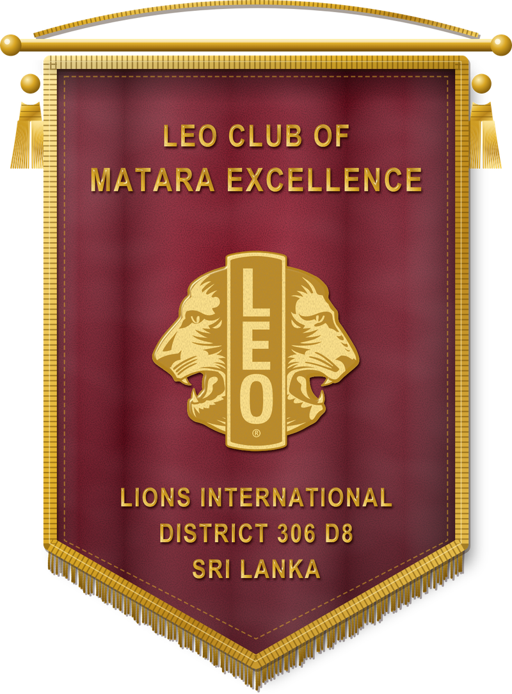
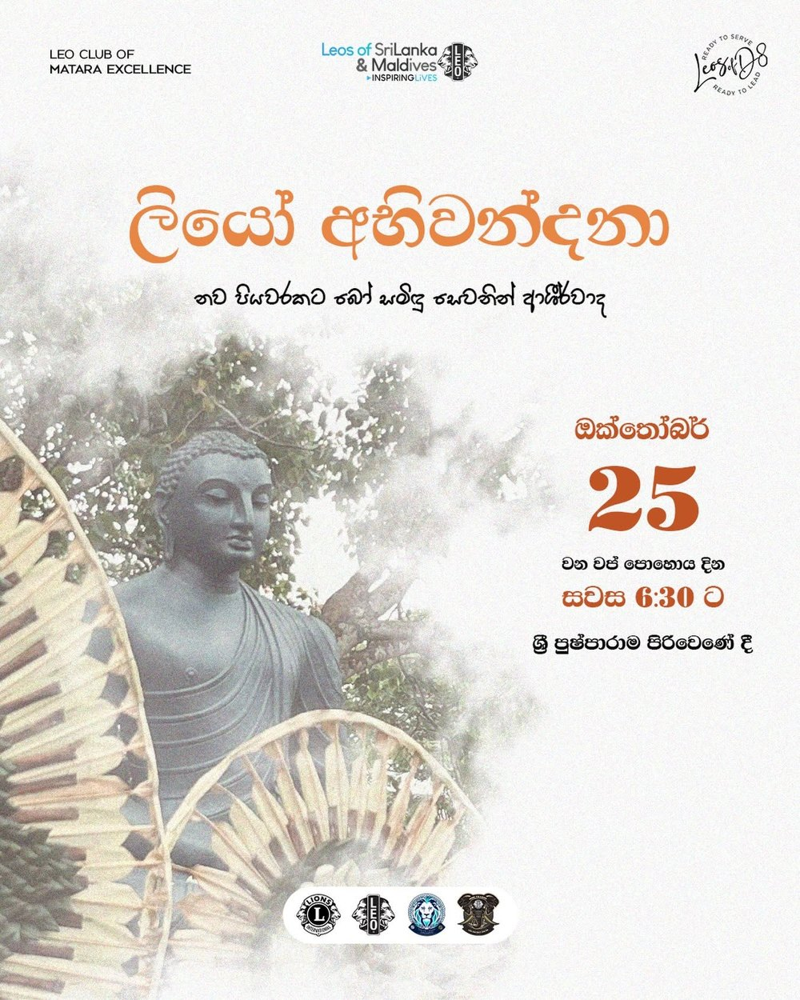
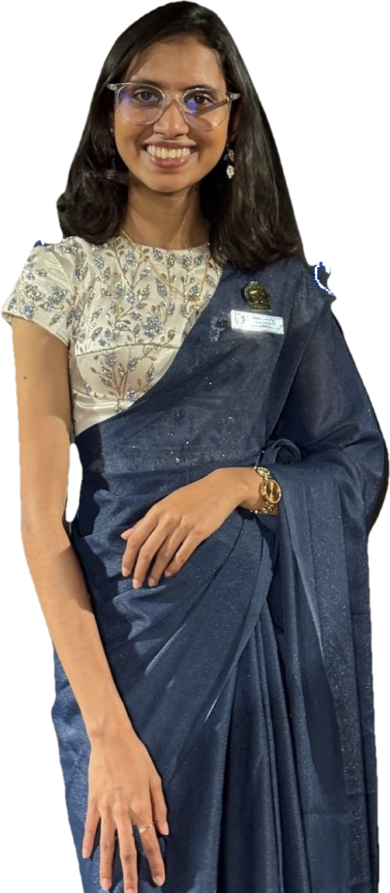

Leadership
Plan projects, manage time and guide teams to outcomes that matter.
01/03 · Leo District 306 D8 · Ready to serve, ready to lead
Through service and leadership that shapes tomorrow.
Be the change Matara is waiting for.
Ready to lead. A new chapter of excellence, made possible by incredible people.


The Leo movement

First step
About us
The Leo Club of Matara Excellence is a youth service club in Leo District 306 D8, within Leo Multiple District 306 of Lions Clubs International. We bring together young people from Matara who want to build skills, serve others and shape the town they call home.

Plan projects, manage time and guide teams to outcomes that matter.
Learn by doing: collaborate, execute and see the impact of service on your community.
Make lifelong connections with purpose-driven people while growing your skills and influence.
Our team
Every project starts with people who show up. Our members come from schools, universities and workplaces across Matara, united by one idea: young people can lead real change.
Join the circle →History
Melvin Jones, a Chicago businessman, calls on business clubs to serve their communities. The Lions motto becomes “We Serve.”
At the Lions convention in Ohio, Helen Keller asks Lions to become “knights of the blind in the crusade against darkness”, shaping the Lions’ commitment to vision care.
Jim Graver, a Lion from Glenside and baseball coach at Abington High School, Pennsylvania, starts the first Leo club, chartered on 5 December 1957, after his son asked why Lions had no service club for young people.
The Lions Club of Colombo, the mother club of the movement in the country, is formed with support from Lions in South India. Its first project distributes white canes to people with sight impairment.
Lions Clubs International formally adopts the Leo program as its youth service arm. The name stands for Leadership, Experience, Opportunity.
The Leo movement begins in Sri Lanka, growing into Leo Multiple District 306 with twelve districts, over 210 clubs and more than 10,000 members across Sri Lanka and the Maldives.
Leo Multiple District 306 expands into the Maldives, widening the family of clubs.
Our first step was the Leo District 306 D8 orientation. This is only the beginning of Excellence. Add our charter date and founding story here once confirmed.
The Lions family
Lions Clubs International is the world’s largest service club organization. Leos are its youth members, supported by Lions mentors.
Over 1.4 million members worldwide serving communities in more than 200 countries and regions. Motto: We Serve.
Young people aged 12 to 30, in two tracks: Alpha (ages 12–18) and Omega (ages 18–30), each with their own leadership journey.
Our Leo district sits alongside Lions District 306 D8, led in 2026/27 by District Governor Lion Ravindra Kalansooriya MJF MAF, under Lions Multiple District 306, which unites all Lions clubs in Sri Lanka.
The national body for Sri Lanka and the Maldives, organised into districts and led by an elected Multiple District President each Leo year.
Every Leo club is sponsored by a Lions club that guides, mentors and supports its projects. Our sponsor: Lions Club of Matara Excellence.
Our causes
Alongside the global causes, Leo clubs in Sri Lanka run projects across 21 categories including education, literacy and community development. We choose the work where Matara needs us most.
Projects
Our first step: the Leo District 306 D8 orientation. More projects and photos are on the way. Follow us on Instagram.

ලියෝ අභිවන්දනා
Blessings for a new step, in the shade of the Bo tree. A religious observance to bless the club’s new beginning.

අමාදම් සිසිල
A Leo mission that gathers merit through giving and soothes with loving-kindness, serving the devotees who gather on Vap Poya.
Executive board

Name to be added
Name to be added
Name to be added
Voices
Sample quotes. Replace with real member words.
Become a Leo
Aged 12–30 and based in or around Matara? Tell us a little about yourself and we’ll get back to you.